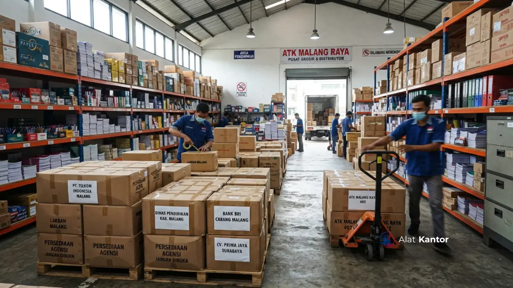

Ringkasan Artikel
- Grosir ATK Malang melayani kebutuhan sekolah, kampus, instansi pemerintah, dan perusahaan swasta secara rutin maupun kontrak jangka panjang.
- Pengiriman tidak terbatas di Malang Raya, tetapi juga menjangkau Jakarta, Surabaya, Denpasar, dan Makassar.
- Setiap transaksi grosir dapat dilengkapi kuitansi resmi bermaterei dan faktur pajak PPN sesuai kebutuhan audit instansi.
- Pemesanan dapat dilakukan melalui konsultasi langsung untuk memastikan spesifikasi dan volume sesuai kebutuhan.
- Harga grosir umumnya lebih kompetitif dibanding pembelian eceran, khususnya untuk kontrak pasokan bulanan.
Mengapa Memilih Grosir ATK Malang untuk Kebutuhan Instansi?
Grosir ATK Malang menjadi pilihan strategis bagi instansi karena berbasis di pusat wilayah Malang Raya dengan jaringan pengiriman yang menjangkau kota-kota besar lain di Indonesia.
Sebagai distributor dan vendor pengadaan B2B yang berbasis di Malang, Jawa Timur, layanan alatkantor secara khusus melayani kebutuhan operasional dan inventaris untuk instansi pemerintah, BUMN, sekolah, kampus, serta perusahaan swasta. Kedekatan lokasi dengan basis operasional memungkinkan proses konsultasi kebutuhan dan penyusunan RAB berjalan lebih responsif, sementara jaringan pengiriman tetap menjangkau wilayah di luar Malang.
Bagaimana Layanan Grosir ATK Malang Melayani Kebutuhan di Jakarta?
Layanan grosir ATK Malang melayani kebutuhan instansi di Jakarta melalui skema pengiriman antarkota yang disesuaikan dengan volume dan jadwal kebutuhan operasional kantor.
Instansi di Jakarta yang membutuhkan pasokan ATK rutin dapat memesan dalam skema kontrak bulanan maupun pemesanan satu kali untuk kebutuhan pengadaan tertentu. Kami telah melayani berbagai instansi di Jakarta dengan kelengkapan dokumen legal yang mendukung proses pelaporan keuangan internal. Untuk konsultasi kebutuhan ATK instansi di Jakarta, silakan hubungi tim kami melalui WhatsApp alatkantor.

Bagaimana Layanan Grosir ATK Malang Melayani Kebutuhan di Surabaya?
Layanan grosir ATK Malang melayani kebutuhan instansi di Surabaya dengan jarak pengiriman yang relatif dekat dari basis operasional di Malang Raya, sehingga proses distribusi dapat berjalan lebih efisien.
Kedekatan geografis antara Malang dan Surabaya memungkinkan waktu pengiriman yang lebih singkat dibanding wilayah luar Jawa Timur. Kami telah melayani berbagai instansi di Surabaya, mulai dari sekolah hingga perusahaan swasta yang membutuhkan pasokan ATK secara berkala. Untuk konsultasi kebutuhan ATK instansi di Surabaya, silakan hubungi tim kami melalui WhatsApp alatkantor.
Bagaimana Layanan Grosir ATK Malang Melayani Kebutuhan di Malang?
Layanan grosir ATK Malang melayani kebutuhan instansi langsung di wilayah Malang Raya dengan waktu pengiriman tercepat karena berbasis di kota yang sama.
Sebagai basis operasional utama, Malang mendapatkan keuntungan berupa waktu respons dan pengiriman yang paling cepat dibanding kota lain, termasuk potensi layanan instalasi langsung oleh teknisi untuk kebutuhan furniture maupun perangkat pendukung yang menyertai pengadaan ATK. Kami telah melayani berbagai instansi di Malang, mulai dari sekolah, kampus, hingga instansi pemerintah daerah, dengan kelengkapan ATK dan alat tulis lengkap secara rutin. Untuk konsultasi kebutuhan ATK lengkap Malang, silakan hubungi tim kami melalui WhatsApp alatkantor.
Bagaimana Layanan Grosir ATK Malang Melayani Kebutuhan di Denpasar?
Layanan grosir ATK Malang melayani kebutuhan instansi di Denpasar dengan skema pengiriman antarpulau yang direncanakan sesuai jadwal kebutuhan operasional instansi.
Bagi instansi di Denpasar, perencanaan waktu pemesanan menjadi faktor penting mengingat proses pengiriman melibatkan jalur logistik antarpulau. Kami telah melayani berbagai instansi di Denpasar dengan koordinasi jadwal pengiriman yang disesuaikan agar kebutuhan ATK tetap terpenuhi tepat waktu. Untuk konsultasi kebutuhan ATK instansi di Denpasar, silakan hubungi tim kami melalui WhatsApp alatkantor.
Bagaimana Layanan Grosir ATK Malang Melayani Kebutuhan di Makassar?
Layanan grosir ATK Malang melayani kebutuhan instansi di Makassar melalui koordinasi pemesanan jarak jauh dengan estimasi waktu pengiriman yang disesuaikan sejak awal transaksi.
Sebagai salah satu pusat ekonomi di Indonesia Timur, Makassar memiliki banyak instansi yang membutuhkan pasokan ATK secara rutin maupun kontrak jangka panjang. Kami telah melayani berbagai instansi di Makassar dengan kelengkapan dokumen legal yang mendukung proses administrasi pengadaan. Untuk konsultasi kebutuhan ATK instansi di Makassar, silakan hubungi tim kami melalui WhatsApp alatkantor.
Untuk memahami bagaimana pasokan ATK ini menjadi bagian dari kebutuhan pengadaan kantor secara menyeluruh, silakan baca artikel Panduan A-Z Merancang Paket Pengadaan Kantor Baru Sejak Hari Pertama. Sementara untuk kelengkapan dokumen transaksi seperti kuitansi resmi, silakan baca Kaidah Perpajakan B2B: Cara Mengurus Kuitansi Bermaterei yang Benar.